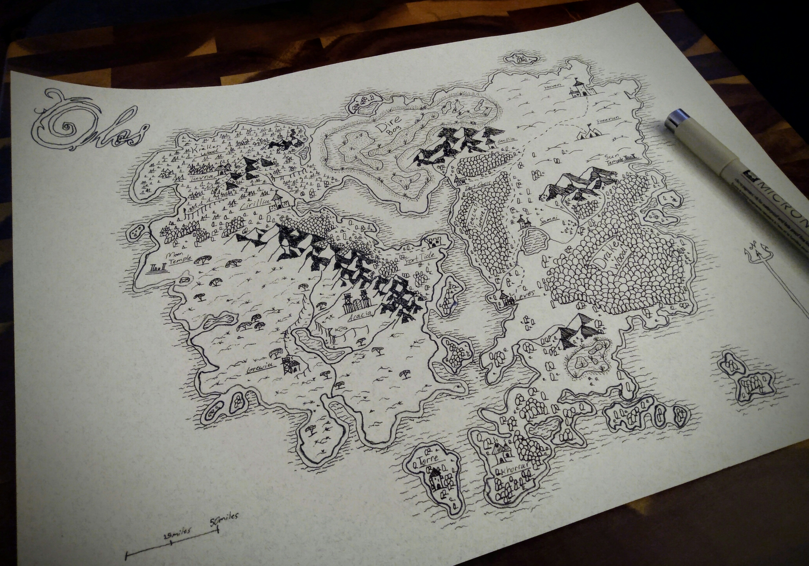

- Item 1
- Item 2
- Item 3
What Would Interested GMs/DMs Be Doing?

As a Game Master (GM) or Dungeon Master (DM) in a West Marches-style TTRPG, your role is to serve as the arbiter of the game world, creating immersive environments, crafting compelling narratives, and facilitating player-driven exploration and adventure. You'll be responsible for designing the wilderness setting, populating it with diverse locations, challenges, and inhabitants, and responding dynamically to the actions and choices of the players. With each session, you'll collaborate with players to weave their individual stories into the fabric of the larger game world, ensuring that every adventure is unique and memorable. Furthermore, there will be meetings to ensure continuity issues don’t arise and all players feel they are playing in the same living world.
What Do Interested Players Need to Do?
If you're interested in joining a West Marches-style TTRPG, the first step is to familiarize yourself with the rules and guidelines established by the hosting website or community. Once you've familiarized yourself with the basics, you can create a character that reflects your desired role within the game world, whether it's a cunning rogue, a wise wizard, or a stalwart warrior. From there, you'll have the opportunity to join sessions organized by the GM/DM or even propose your own expeditions and quests for fellow players to join. With a spirit of adventure and a willingness to collaborate with others, you'll embark on an epic journey filled with discovery, danger, and camaraderie in the world of the West Marches.